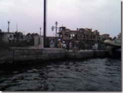
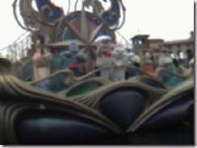
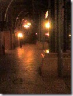

写真とかＰＣに取り込んだついでに。。。 ディズニーシーであった出来事でも。。。
2008/03/17 23:30:51
卒業旅行ということで3月のとある平日の日に、友達数人とディズニーシーに行ってきましたー
まず、行きのディズニートレインの窓を眺めてたらこんなものが！！

うぉｗ！ どうやら新しくできるディズニーの公式ホテル（アンバサダーやミラコスタのような）だそうです。
ディズニー好きなら１回でも泊まりたいホテルになるだろうなぁ･･･なんせディズニー作品に出てきそうなお城チックだからなぁ。。。
そして、ついたらダッシュで入り口の門へ！！！
まぁ、平日なので、人すくねーだろｗなんて思ってたら、結構人盛りが･･･
ということで、開門してまたテラーファストパス発券所にダッシュ！！！
そして、ファストパス取った後、スタンバイで待ち時間見たら、１５分程度・・・・・・ウマー（゜∀゜ ）
 ←アメリカンウォーターフロントから乗れる船から見えるタワー・オブ・テラー
←アメリカンウォーターフロントから乗れる船から見えるタワー・オブ・テラー
で、そのあとスタンバイ＋ファストで２回乗ったのですが、コレ、マジで楽しい!!!癖になりますｗ
そのあと、ゴンドラに乗ってゆっくり船旅なのですが、アレ？ショーがあって止まってるじゃんなんて思ってたら、内容を変更して
ショー（の裏側）をゴンドラから見れるという特別な内容でお贈りしてくれましたー！なんてラッキーな！！
 ←よく見えないかもしれないですけど、ドナルドとかプルート（？）が踊ってます・・・
{kind=link}
 ←携帯のショボイレンズで撮ったのでピンボケとか画質はｷﾆｼﾅｲ（ぇ
{kind=link}
っで、上の写真でアラジンがいるんですけど、船の中になんとジャファー（たぶん）になりきってるいかにもディズニー好きのおばさんがいたんですよー
そうしたら、船の上にいたアラジンが思いっきり『ジャファーー！！！』って叫んでてｗｗｗマジワロタｗ船にいたみんな大爆笑ｗ!!
とまぁ、本当は、ショーは見ないで味わんないでスルーで行こう!!なんて思ったけど、こういうことがあったのでショーも満足に味わえちゃいましたｗ
あと、夜の遅い時間になってアメリカンウォーターフロントの駅付近で帰るのに通る道のついでにお土産を買いに行ったのですが
 ←（注）アメリカの田舎の駅付近で撮っていません！！実際にシーで撮ったものですｗ
{kind=link}
誰もいＮＥＥＥＥＥＥＥ！！！！！さすが雨降ってる平日！人気（ひとけ）すら感じられないｗこんなＳＥＡ見たこと無いぜｗ
っということで、アトラクション（絶叫系）の乗った合計の数ですが･･･
レイジング２回 アース１回 インディー２回
そして、伝説作りましたｗｗ
テラー
５回！！！！！！
アホですｗ
もう逝っていいよという感じですｗ
何度、自分にお別れしたのやらｗ
５年分は乗ったかも・・・
っということで、これ以上書く気力が無いので、終わりです。
{kind=link}
↑最後に写真。。。テラーは夜になると暗い青っぽいイルミネーションになるんですねー(柱の間から見えます)
コレ見てディズニーシー行きたくなった人いるだろな。
うん。ｹﾞｰﾑとか、パソコンとかかんけーないねｗコレ